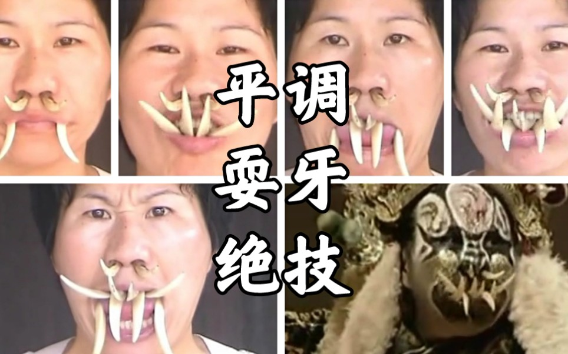

宁海平调艺术传承中心
项目对接场域。排练、授徒、演出与地方保护工作在此交汇，是官方叙事与公开活动的重要据点。
耍牙依附于宁海平调这一完整剧种生态：唱腔、身段、脸谱、盔头、靠旗与口中獠牙共同构成角色。公开资料中，叶全民被表述为国家级非遗代表性传承人、平调耍牙重要传人；他把牙数推进到十颗，造型扩展到四十余种，并推动面向女性弟子的开放传承。薛巧萍等新生代传人的公开影像，使「人」与「艺」同时进入当代传播视野。
项目对接场域。排练、授徒、演出与地方保护工作在此交汇，是官方叙事与公开活动的重要据点。
十颗牙极限、四十余种造型；推动打破「传男不传女」。本站影像与方案叙事以他的公开表演与传承实践为轴心。

公开影像中的第六代传人形象，呈现开放传承后的女性接续，适合讲解「技艺可传、叙事需补」。

耍牙服务角色塑造，而非独立杂技。讲解时应回到平调剧目（如《金莲斩蛟》）、人物功能与舞台节奏。
口诀「静耍在于意，行耍牙不乱」提示两层结构：静时靠意念稳住牙位与气息；动时靠舌为主要动力，齿沿固定、唇部收束，完成翻、转、弹、叼等变化。牙数从两颗、四颗、八颗到十颗，造型服务于人物气质，不是简单的「越多越好」。

獠牙置入口中，齿与唇建立基础固定。初学阶段最易因急于翻飞而磨破黏膜，需要慢练与间歇。

舌尖顶送改变牙的朝向与高度，形成上下翻飞。节奏不稳时最容易出现头部晃动——也是 AI 姿态提示的重点。

靠旗翎子、脸谱与獠牙同台，绝技嵌入身段与锣鼓点。离开剧目只剩特写，文化层就会断裂。

八牙与十牙、鼻插与口含等组合，对应不同戏剧张力。讲解时建议「先辨造型，再谈极限」。
短时含牙、熟悉异物感，建立呼吸与下颌放松。重点不是表演，而是不伤口腔。
掌握咬、舔、吞、吐等基础环节，固定头位与节奏。周期往往以月计。
牙数与造型增加，嵌入身段、锣鼓与人物情绪。训练与排练同步。
舞台演出、培训展示、短视频科普。此时痛点转向：如何讲清、如何正版传播。
浙江宁波宁海一带古老剧种，耍牙为其代表性表演绝技之一。
将特制獠牙含入口中，以舌齿唇完成翻飞变口，服务角色塑造。
表演用牙的数量组合，常见四、八、十等；数量变化对应造型与难度。
口诀结构：静时以意稳住，动时牙路不乱，强调控制而非刺激。
常被提及的角色类型之一，獠牙强化其威猛、野性的舞台形象。
打破「传男不传女」等旧规后，女性弟子亦可进入耍牙传承序列。
本项目四步路径：拍清真实素材、生成小红书内容、学会平台发布、看懂简单数据。
工坊演示概念：用画面/声音/关键帧特征比对疑似搬运与二次剪辑。